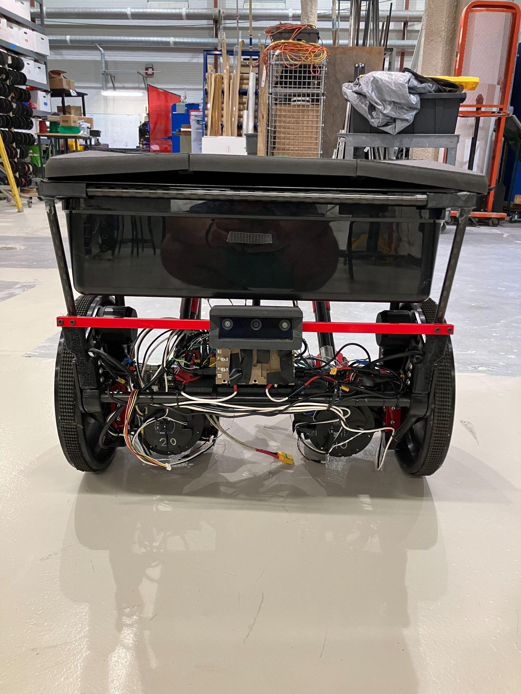
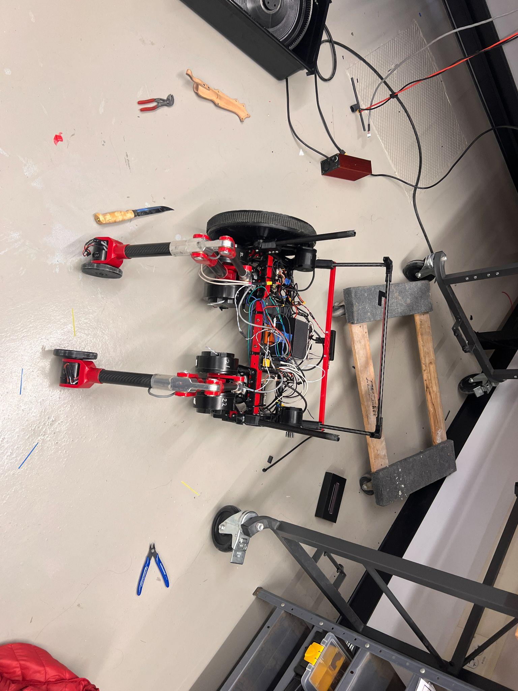

CMU Capstone 2026
A robot that carries your backpack.
Team BoWL is an autonomous legged-wheeled robot designed to follow students across a university campus, carrying their belongings so they don't have to.

CMU Capstone 2026
Team BoWL is an autonomous legged-wheeled robot designed to follow students across a university campus, carrying their belongings so they don't have to.
Problem Definition
On a typical university campus, students travel between buildings carrying backpacks loaded with laptops, textbooks, and supplies. Continuous backpack use causes back, neck, and shoulder pain, increasing spinal pressure and reducing comfort over a full day of classes.
Heavy backpacks cause chronic muscle and joint pain, reducing efficiency and wellbeing throughout the school day.
Students with mobility limitations face even greater difficulty carrying heavy loads across a spread-out campus.
Campus environments include smooth halls, cracked sidewalks, curbs, and elevators — a challenge for conventional wheeled solutions.
The Piaggio Gita is a commercially available autonomous cargo robot that follows a user, but it is limited to smooth, even terrain due to its purely wheeled design. Team BoWL extends this concept to handle the full range of terrain found on a real campus by combining wheels for efficiency with deployable legs for stability and obstacle-climbing.

Concept
The robot operates primarily on wheels for efficient travel, then deploys auxiliary leg mechanisms to stabilize itself and climb obstacles like curbs and elevator thresholds. A lockable cargo compartment stores up to 20.6 quarts of cargo.
The robot uses its RGB-D camera and LiDAR to detect, identify, and track the user. It maintains a 0.5–5 m following distance while avoiding obstacles in real time.
When wheel odometry or IMU data indicates a stall or obstacle, the leg servos activate to push the robot over the obstacle and resume rolling.
A remote operator can take full control over WiFi at any time, commanding motion in any direction. Switching between modes is seamless.
Both a physical e-stop switch and a wireless software e-stop cut power to all actuators instantly. LED status indicators are visible from 15 m away.

High-fidelity assembly drawing — stowed configuration (four views). Drawn by Cole Herber.
The team evaluated 18 locomotion concepts across seven weighted criteria: implementation complexity, mass & size, space efficiency, power loss, speed, obstacle traversal, and user accessibility. The analysis pointed to a biped+ (biped with wheels) configuration as optimal. The final design implements this as two drive wheels with four deployable leg servos (RS04 joints) for terrain assist.


Assembled robot in the Newell-Simon Hall highbay.

Leg mechanism detail showing RS04 servo joints and carbon fiber linkages.
Requirements
The system requirements were derived from the problem statement and organized by priority: H (necessary for function), M (greatly improves function), and L (minor improvement). All high-priority requirements were validated at the System Validation Review.
System Architecture
Every module is implemented as a ROS 2 node communicating over standardized topics. The architecture emphasizes modularity and fault isolation — perception, decision, actuation, and safety are fully decoupled.

Four top-level subsystems: HCI & Safety, Perception, Decision, and Locomotion.

ROS 2 node graph showing sensor bridges, planners, mode manager, and actuator controllers.
OAK-D RGB-D camera tracks the user. A 2D LiDAR detects obstacles. An Xsens MTi IMU provides odometry and orientation. All streams merge in a sensor bridge node.
A terrain assessor classifies surface difficulty. The mode manager selects wheel-only or leg-assist locomotion. The local planner generates obstacle-avoiding waypoints.
Two large drive wheels powered by VESC motor controllers. Four RS04 servo leg joints for terrain assist. A dedicated leg MCU and locomotion control nodes manage all motion.
Physical and virtual e-stop halt all actuators within 1 second. RGB LED strips signal operational state. A tele-op server enables full remote control over WiFi.
Demo
Videos of terrain traversal, autonomous following, and tele-operation from our System Validation Review.
Autonomous Following
User tracking + obstacle avoidanceTele-Operation
Full indoor test courseReplace the placeholders above with additional <video> or YouTube embeds as footage becomes available.
Team